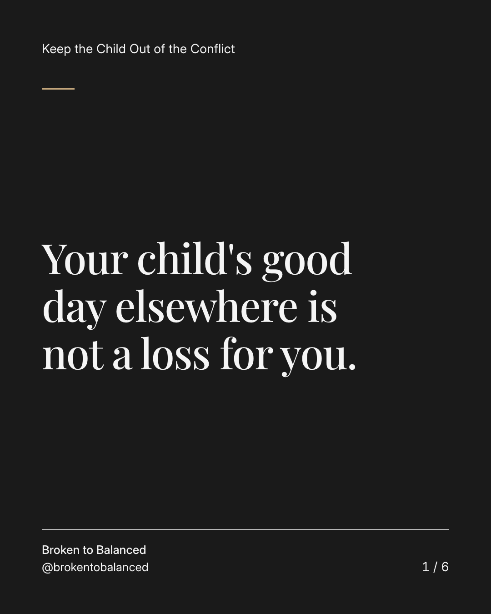
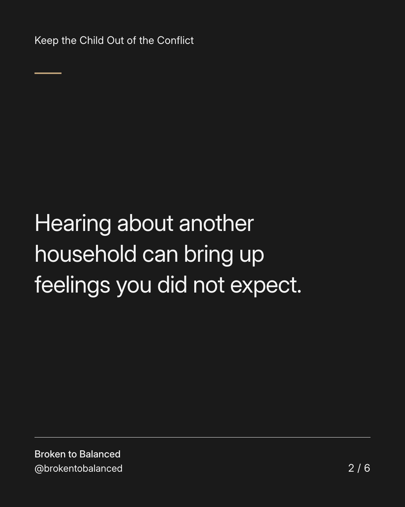
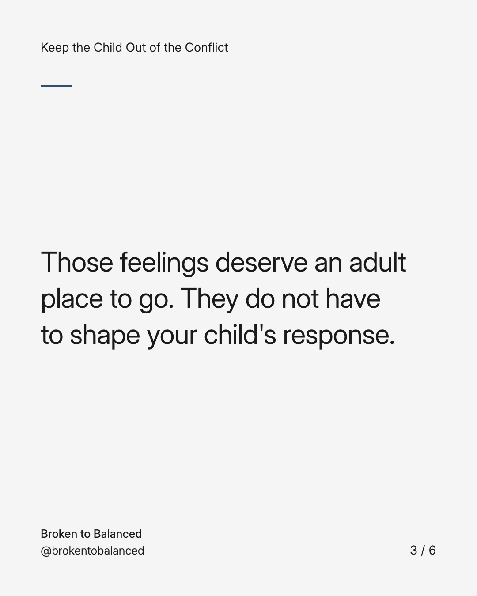
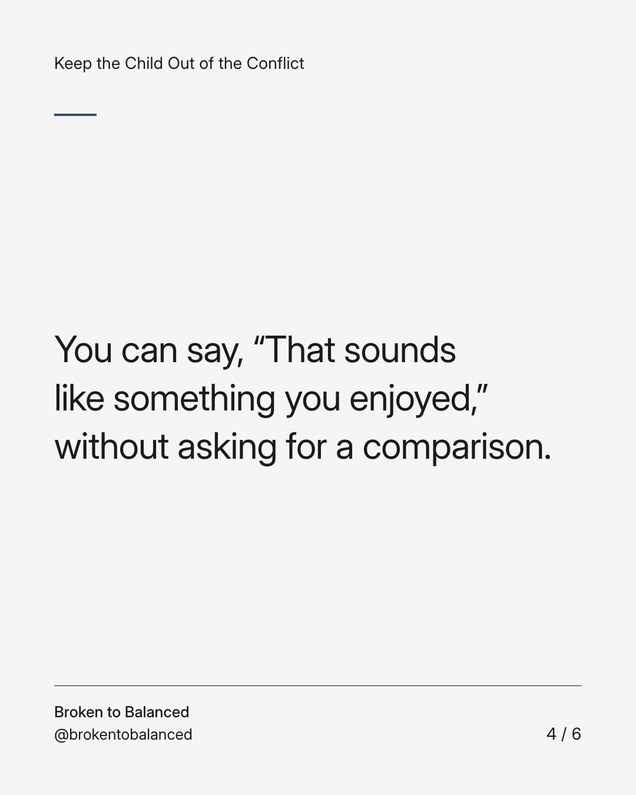
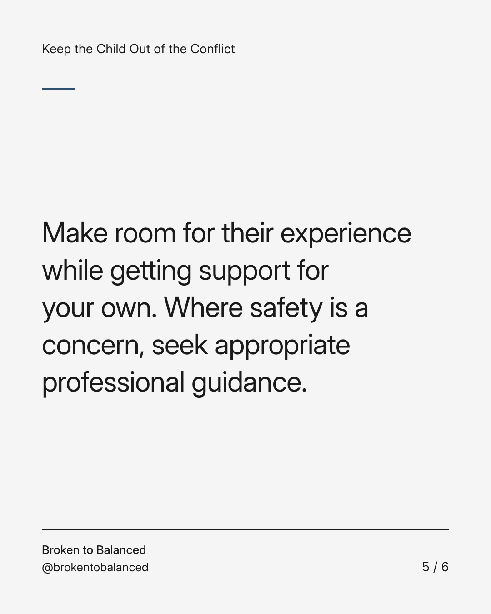
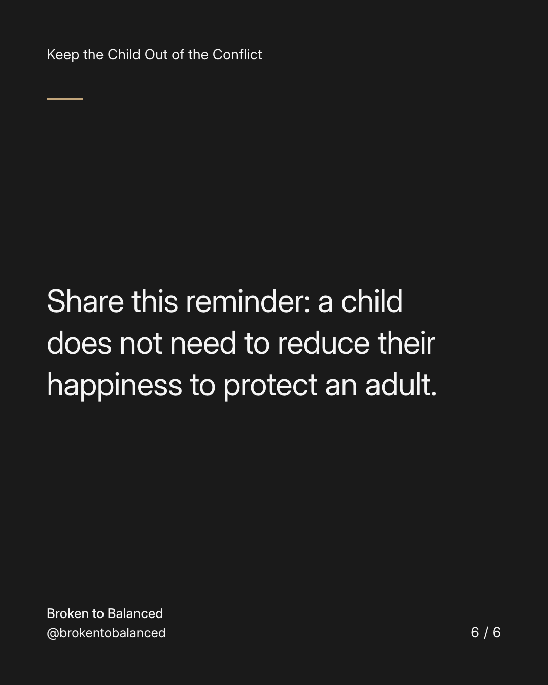

Exact text and accessibility text
Your child's good day elsewhere is not a loss for you.
Slide 1 of 6. Your child's good day elsewhere is not a loss for you.


Exact text and accessibility text
Hearing about another household can bring up feelings you did not expect.
Slide 2 of 6. Hearing about another household can bring up feelings you did not expect.


Exact text and accessibility text
Those feelings deserve an adult place to go. They do not have to shape your child's response.
Slide 3 of 6. Those feelings deserve an adult place to go. They do not have to shape your child's response.


Exact text and accessibility text
You can say, “That sounds like something you enjoyed,” without asking for a comparison.
Slide 4 of 6. You can say, “That sounds like something you enjoyed,” without asking for a comparison.


Exact text and accessibility text
Make room for their experience while getting support for your own. Where safety is a concern, seek appropriate professional guidance.
Slide 5 of 6. Make room for their experience while getting support for your own. Where safety is a concern, seek appropriate professional guidance.


Exact text and accessibility text
Share this reminder: a child does not need to reduce their happiness to protect an adult.
Slide 6 of 6. Share this reminder: a child does not need to reduce their happiness to protect an adult.
Exact caption
Plain-text fallback: select and copy the caption.